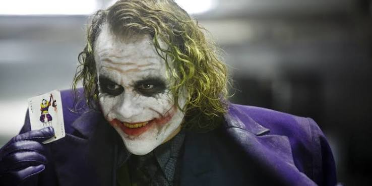

Джокер

18+ 2019г. ‧ Криминал/Триллер ‧ 2 ч 2 мин
Страна - США, Канада, Австралия
Жанр - драма, криминал, триллер
Слоган - «Сделай счастливое лицо»
Режиссер - Тодд Филлипс
Сценарий - Тодд Филлипс, Скотт Сильвер, Боб Кейн, ...
Продюсер - Ричард Баратта, Брюс Берман, Джейсон Клот, ...
Оператор - Лоуренс Шер
Композитор - Хильдур Гуднадоуттир
Художник - Марк Фридберг, Лора Боллинджер, Марк Бриджес, ...
Монтаж - Джефф Грот
Бюджет - $55 000 000
Сборы в США - $335 451 311
Сборы в мире - + $743 300 000 = $1 078 751 311
Сборы в России - $31 418 225
Премьера в России - 3 октября 2019, «Каро-Премьер»
Премьера в мире - 31 августа 2019, ...
Цифровой релиз - 27 декабря 2019, «Warner Bros.»
Возраст - 18+
Рейтинг MPAA - R
Время - 2 ч 2 мин
×